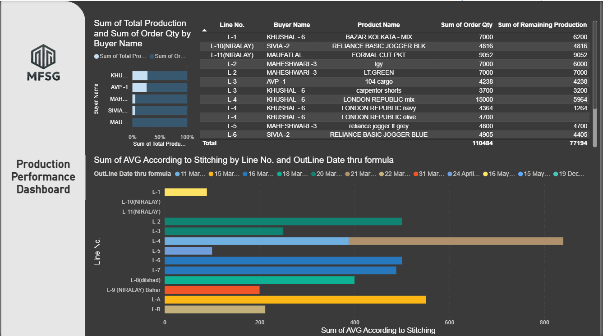

03. VISUALIZING DATA
Operational Intelligence
MFSG_Production.pbix

MFSG: Production Performance
Tracking the manufacturing lifecycle. Identifying bottlenecks in real-time to streamline garment production.
Walmart_Tracker.xlsx

Welspun: Order Analytics
Visualizing Order Counts & Deadlines. Logic structured by me to ensure 100% on-time delivery.